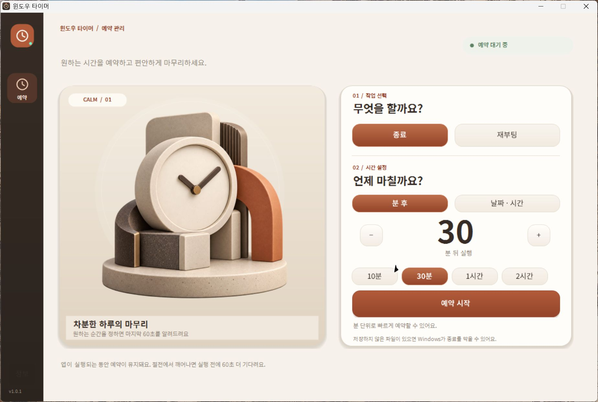
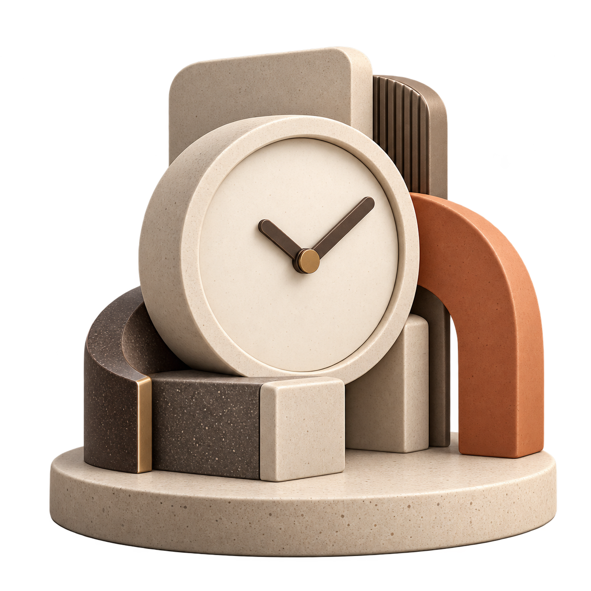

원하는 시간에 예약
분 단위 카운트다운이나 날짜·시간으로 종료, 재부팅, 절전, 최대 절전을 예약하세요.
종료까지30분예약 대기 중
하루의 끝을 준비하는 작은 도구
윈도우 종료와 재부팅을 원하는 시간에. 취소도, 10분 연장도, 휴대폰 원격 예약도 간편하게.

만든 이야기
밤늦게 작업을 마치고 나면 윈도우 종료 명령을 입력하곤 했습니다. 반복되는 일을 줄이고, 마음 놓고 마무리할 수 있도록 직접 만든 앱이 윈도우 타이머입니다.

필요한 순간에, 정확하게
단순한 예약부터 반복 일정과 안전 조건까지, 한곳에서 설정하세요.
분 단위 카운트다운이나 날짜·시간으로 종료, 재부팅, 절전, 최대 절전을 예약하세요.
실행 60초 전 알림을 확인하고 취소하거나, 작업이 더 필요하면 10분 연장하세요.
요일별 반복을 설정하고 배터리, 전원 연결, PC 유휴 상태를 조건으로 사용하세요.
시스템 트레이에서 남은 시간을 확인하고, 로그인 시 자동 실행과 설정 프로필을 활용하세요.
책상 밖에서도 예약
PC 앱에서 원격 예약을 켜고 QR을 스캔하면 휴대폰 브라우저에서 예약을 만들고 취소할 수 있습니다. 5G 연결도 앱에서 시작할 수 있어 주소와 코드를 직접 입력할 필요가 없습니다.
PC에서 원격 연결 켜기
화면의 QR 코드 스캔
휴대폰에서 예약 관리
LAN 연결은 암호화되지 않은 HTTP입니다. 5G 연결은 임시 Cloudflare 터널을 사용하며 앱을 종료하면 연결이 끝납니다.
예약 동작
언제 마칠까요?
준비는 간단하게
Windows 10·11에서 사용할 수 있습니다. 파일을 내려받아 실행하면 바로 시작할 수 있어요.
예약 실행 중에는 PC를 켜 두세요. 실행 전 알림이 표시되며 예약은 언제든 취소할 수 있습니다.